Activity
Activity是与用户交互的接口
Activity任务栈
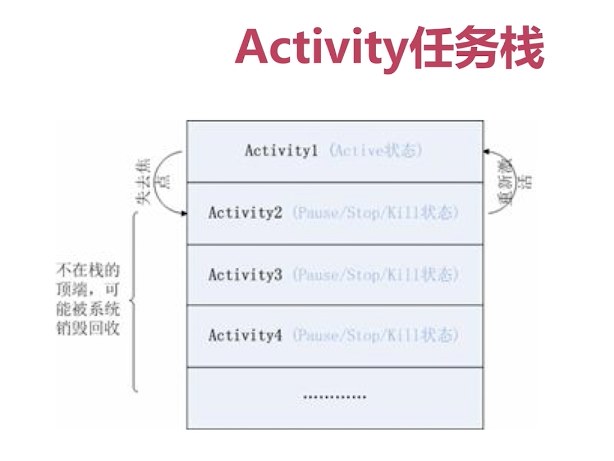
Android通过Activity栈管理Activity，Activity状态决定了它在栈中的位置
Activity四种形态
- Active：Activity处于栈顶（栈顶，可见，与用户进行交互）
- Paused：可见但不可交互（数据、状态、成员变量都是存在的，内存不足时可能会被回收）
- Stopped：不可见
- Killed：系统回收掉
正常情况生命周期回调
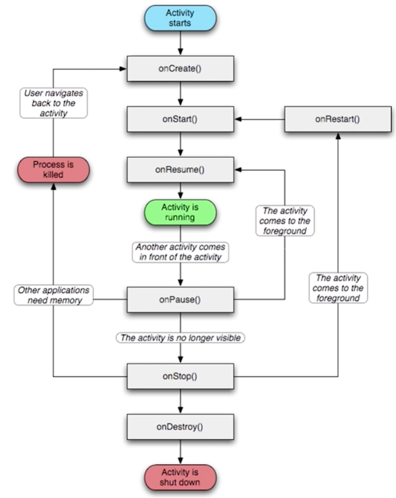
异常情况生命周期回调
- onSaveInstanceState()
- onRestoreInstanceState()与onCreate()都可以进行数据恢复，但前者的Bundle数据一定不为空，所以不用进行非空判断
生命周期总结
- 正常启动：onCreate()-onStart()-onResume()
- back回退：onPause()-onStop()-onDestroy()
- 打开新Activity：onPause()-onStop()
- Activity异常：onSaveInstanceState()保存数据
- Activity重新创建：onRestoreInstanceState()
Activity之间通信
- Intent/Bundle
- 类静态变量
- 全局变量
Activity与Fragment通信
Activity将数据传递给Fragment
- Bundle
- 直接在Activity中定义方法
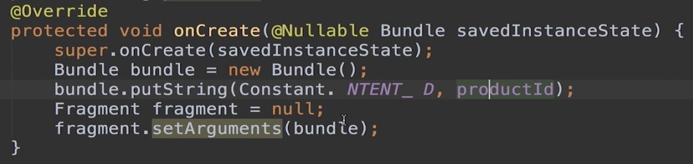
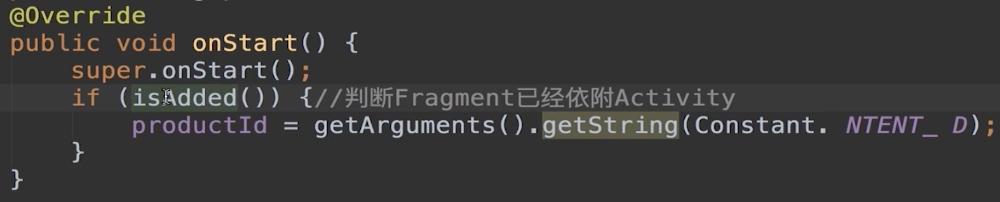
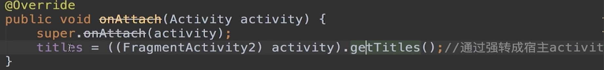
Fragment将数据传递给Activity
- fragment中定义一个内部回调接口
- fragment的方法onAttach()
- 调用onDeach方法，把传递进来的Activity对象释放掉
Fragment
public class TestFragment extends Fragment implements View.OnClickListener {
// 2.1 定义用来与外部activity交互，获取到宿主activity
private FragmentListener listener;
// 1 定义了所有activity必须实现的接口方法
public interface FragmentListener{
void process(String str);
}
@Override
public void onAttach(Activity activity) {
super.onAttach(activity);
if(activity instanceof FragmentListener) {
listener = (FragmentListener)activity; // 2.2 获取到宿主activity并赋值
} else{
throw new IllegalArgumentException("activity must implements FragmentListener");
}
}
@Override
public void onClick(View v) {
listener.process("我是接口"); //3.1 执行回调
}
//把传递进来的activity对象释放掉，防止内存泄漏
@Override
public void onDetach() {
super.onDetach();
listener = null;
}
}
Activity
class MainActivity : AppCompatActivity(),TestFragment.FragmentListener {
override fun process(str: String?) {
TODO("not implemented") //To change body of created functions use File | Settings | File Templates.
}
override fun onCreate(savedInstanceState: Bundle?) {
super.onCreate(savedInstanceState)
setContentView(R.layout.activity_main)
}
}
Activity与Service通信
- 绑定服务，利用ServiceConnection类
- 简单通信，利用Intent进行传值
- 定义一个callback接口来监听服务中的进程变化
Service
public class MyService extends Service {
public String data = "服务器正在执行";
public MyService() {
}
public class Binder extends android.os.Binder{
public void setData(String data){
MyService.this.data = data;
}
}
@Nullable
@Override
public IBinder onBind(Intent intent) {
return new Binder();
}
@Override
public int onStartCommand(Intent intent, int flags, int startId) {
return super.onStartCommand(intent, flags, startId);
}
@Override
public void onDestroy() {
super.onDestroy();
}
@Override
public boolean onUnbind(Intent intent) {
return super.onUnbind(intent);
}
}
Activity
public class ServiceActivity extends AppCompatActivity implements ServiceConnection {
public MyService.Binder binder = null;//①
@Override
protected void onCreate(@Nullable Bundle savedInstanceState) {
super.onCreate(savedInstanceState);
if (binder != null)
binder.setData("启动服务了");//③
}
@Override
public void onServiceConnected(ComponentName name, IBinder service) {
binder = (MyService.Binder)service;//②
}
@Override
public void onServiceDisconnected(ComponentName name) {
}
}
Callback方案
Service
public class MyService2 extends Service {
private Callback callback;
public String data = "服务器正在执行";
public void setCallback(Callback callback) {
this.callback = callback;
}
public Callback getCallback() {
return callback;
}
public interface Callback {
void onDataChange(String data);
}
public class Binder extends android.os.Binder {
public void setData(String data) {
MyService2.this.data = data;
}
public MyService2 getMyService() {
return MyService2.this;
}
}
@Nullable
@Override
public IBinder onBind(Intent intent) {
return new Binder();
}
}
Activity
public class ServiceActivity2 extends AppCompatActivity implements ServiceConnection {
public MyService2.Binder myBinder = null;
private Handler hander = new Handler(){
@Override
public void handleMessage(Message msg) {
super.handleMessage(msg);
}
};
@Override
public void onServiceConnected(ComponentName name, IBinder service) {
myBinder = (MyService2.Binder) service;
myBinder.getMyService().setCallback(new MyService2.Callback(){
@Override
public void onDataChange(String data) {
Message msg = new Message();
Bundle b = new Bundle();
b.putString("data",data);
msg.setData(b);
hander.sendMessage(msg);
}
});
}
@Override
public void onServiceDisconnected(ComponentName name) {
}
}
Activity生命周期
- standard
- singleTop
- singleTask
- singleInstance
standard
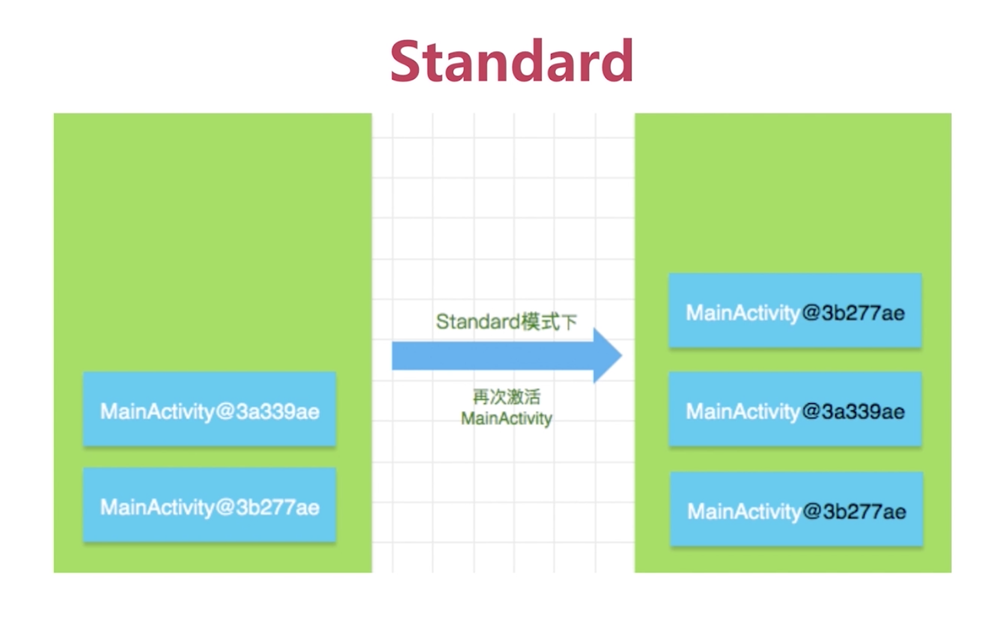
图片有误，最上面的实例应该是新的
- 系统默认使用该模式启动Activity
- 每次启动都会重新创建一个新的实例
- 调用它的onCreate()-onStart()-onResume()
singleTop
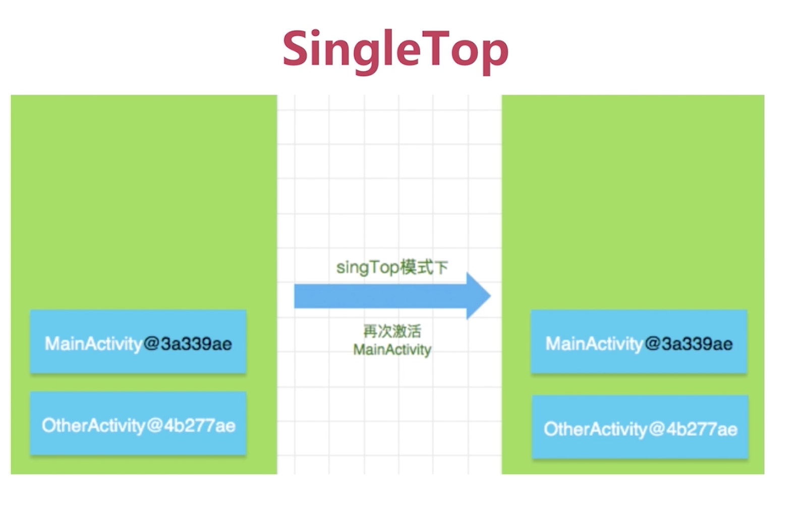
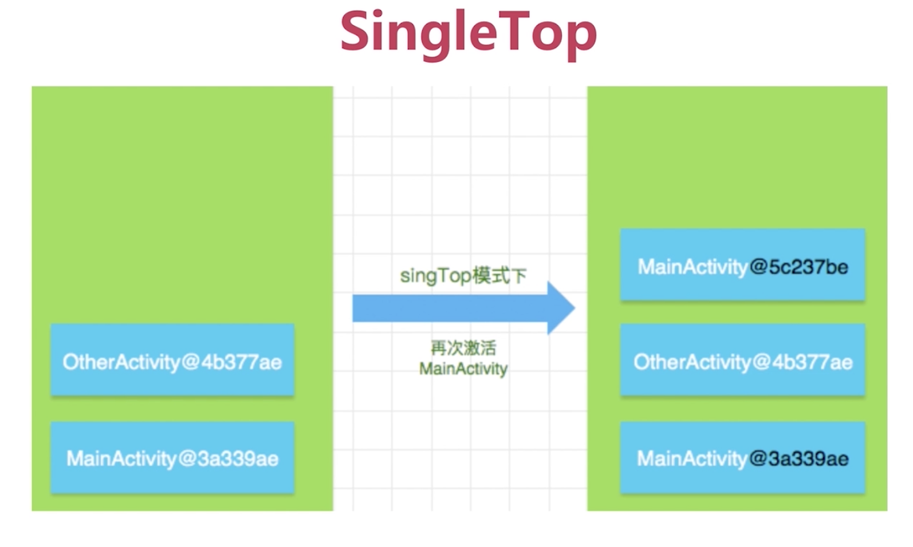
- 当前栈中已有该Activity实例并且位于栈顶时，onNewIntent()
- 当前栈中已有该Activity实例但不在栈顶，创建新的实例
- 当前栈中不存在该Activity实例，创建
应用场景：
- IM对话框
- 新闻客户端推送
singleTask
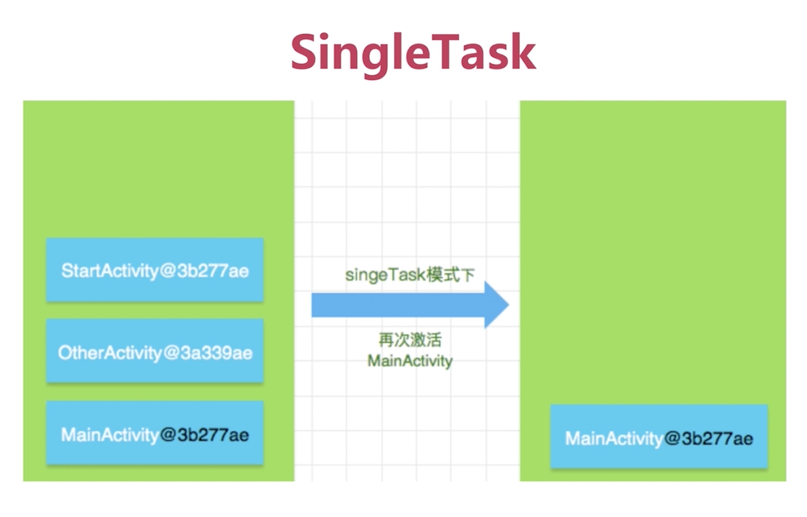
- 首先根据taskAffinity（任务相关性，对默认及singleTop没有影响）去寻找当前是否存在一个对应名字的任务栈，一般情况为包名
- 如果不存在，则会创建新的Task栈，创建新的Activity实例
- 如果存在，则得到该任务栈，查找该任务栈中是否存在该Activity实例
- 存在则弹出其上方Activity实例并调用onNewIntent()，不存在则创建
可以将不同APP的Activity设置相同的taskAffinity，这样两个不同APP的Activity会被放入同一个任务栈中
应用场景：应用的主界面
singleInstance
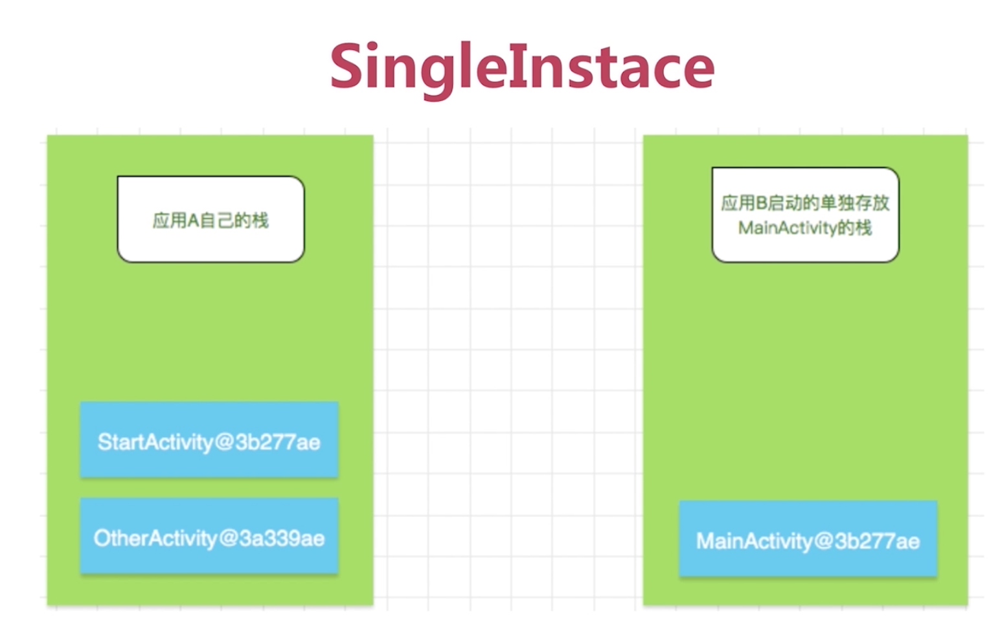
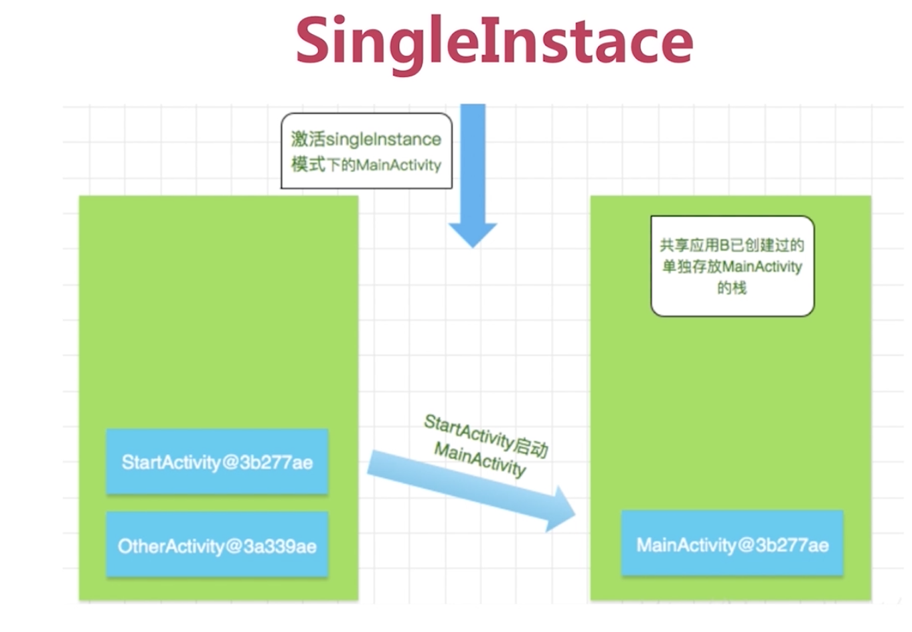
- 具有全局唯一性
- 如果在启动这样的Activity时，已存在了一个实例，会把他调度到前台复用
- 具有独占性（独自占有一个Task任务栈）
应用场景：呼叫来电界面
Service和线程的区别和应用场景
Thread程序执行的最小单元，分配CPU的基本单位
Service是Android的一种机制，是运行在主线程上的
Thread生命周期
- 新建
- 就绪
- 运行
- 死亡
- 阻塞
缺点：无法控制
Service生命周期
- onCreate
- onStart
- onDestroy
- onBind
- onUnbind
如何管理Service生命周期
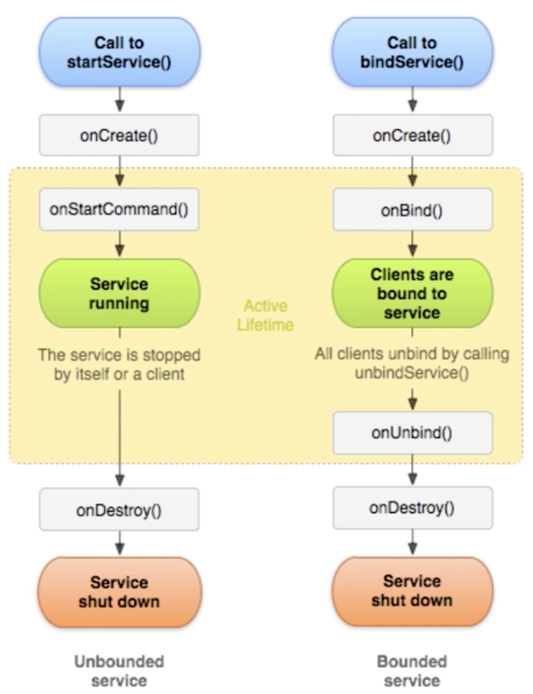
- startService，多次启动onCreate()只会调用一次，onStartCommand()调用的次数与startService保持一致
- stopService,一个Service被启动且被绑定，在没有解绑的情况下，stopService无法停止服务
- bindService，可以绑定已经使用startService启动的服务
IntentService和Service的异同
不建议在Service中编写耗时的逻辑和操作，否则会引起ANR
IntentService
- IntentService内部有一个工作线程handlerThread来处理耗时操作
- IntentService是继承并处理异步请求的类
- 内有一个工作线程来处理耗时操作
- IntentService内部 则是通过消息的方式发送给HandlerThread的，然后由Handler中的Looper来处理消息
源码：
onCreate()方法
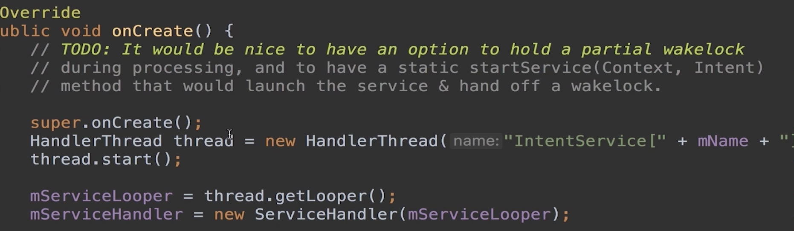
ServiceHandler继承Handler，传入的对象为Looper，Looper与HandlerThread绑定，ServiceHandler就持有了HandlerThread的Looper，便可执行异步任务
onStart()方法（onStartCommand-onStart）
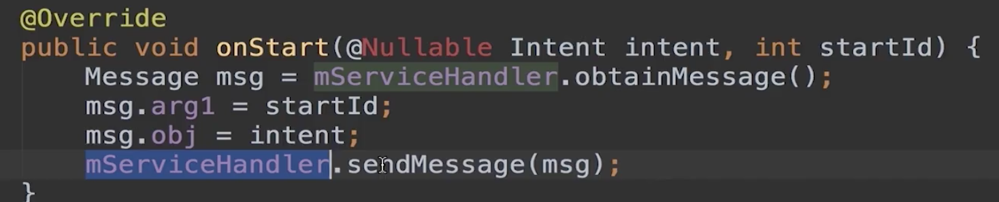
ServiceHandler发送消息，这个消息最终交给HandlerThread去处理，本质是Looper从消息队列取出消息然后调用ServiceHandler进行处理
ServiceHandler
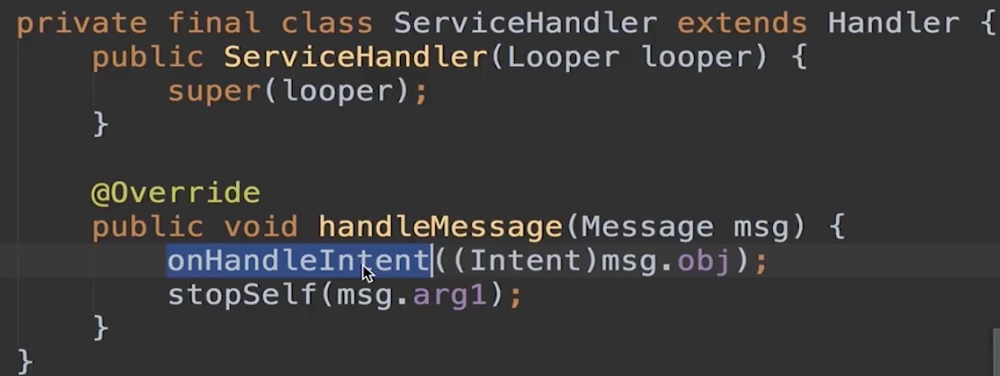
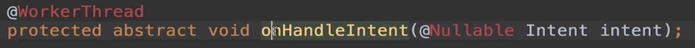
任务全部完成销毁
启动和绑定Service服务先后次序问题
服务的状态有启动状态和绑定状态，实际情况中一个服务可能有多种状态，但Android只会为一个服务创建一个实例对象，具体分为如下两种情况：
- 先绑定服务后启动服务
- 先启动服务后绑定服务
第一种，如果当前Service实例先以绑定状态运行了再以运行状态运行，绑定服务将会转为启动服务运行状态，这时候如果之前绑定服务的Activity销毁了也不会影响服务运行，只有调用停止服务的指令才会销毁服务
第二种，即使Activity解除绑定了，服务依然按启动服务的生命周期在后台运行，直到调用stopService()服务才会被销毁
总结
- 启动服务优先级比绑定服务要高
- 服务在其托管进程的主线程运行（UI线程）
序列化：Parcelable和Serializable差异
- 序列化：内存中对象->磁盘（或其他介质）
- 反序列化：磁盘中对象->内存
Serializable
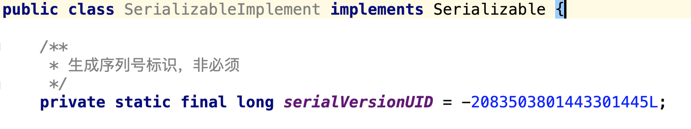
serialVersionUID的作用，序列化操作的时候系统会把当前类的UID写到序列化的文件中，当反序列化的时候系统会检测文件中的UID，判断是否一致，一致说明序列化的版本和当前类的版本是一样的，就可以反序列化。Serializable在内存开销上比较大
Parcelable
public class ParcableImplement implements Parcelable {
public int id;
public String name;
public ParcableImplement() {
}
protected ParcableImplement(Parcel in) {
this.id = in.readInt();
this.name = in.readString();
}
//当前对象的内容描述,一般返回0即可
@Override
public int describeContents() {
return 0;
}
//将当前对象写入序列化结构中
@Override
public void writeToParcel(Parcel dest, int flags) {
dest.writeInt(this.id);
dest.writeString(this.name);
}
/**
* public static final一个都不能少，内部对象CREATOR的名称也不能改变，必须全部大写。
* 重写接口中的两个方法：
* createFromParcel(Parcel in) 实现从Parcel容器中读取传递数据值,封装成Parcelable对象返回逻辑层，
* newArray(int size) 创建一个类型为T，长度为size的数组，供外部类反序列化本类数组使用。
*/
public static final Creator<ParcableImplement> CREATOR = new Creator<ParcableImplement>() {
//从序列化后的对象中创建原始对象
@Override
public ParcableImplement createFromParcel(Parcel source) {
return new ParcableImplement(source);
}
//创建指定长度的原始对象数组
@Override
public ParcableImplement[] newArray(int size) {
return new ParcableImplement[size];
}
};
}
总结
- 两者的实现差异
- 两者效率上的对比，Parcelable内存开销更小。内存中传递数据，如Activity之间传递数据，AIDL之间传递数据更推荐Parcelable。对象序列化到存储设备中一般推荐使用Serializable，也可以防止Android不同版本之间的差异
binder应用：AIDL如何创建
AIDL是Android接口定义语言，是进程间通信(IPC)机制，Android中一个进程通常无法访问另一个进程的内存，这时可以使用AIDL来定义客户端服务端进程通信机制，是两者都认可的一种接口
实现步骤
- 创建AIDL：实体对象、新建AIDL文件、make工程
- 服务端：新建Service、创建Binder对象、定义方法
- 客户端：实现ServiceConnection、BindService
Person
public class Person implements Parcelable {
private String mName;
public Person(String name) {
mName = name;
}
protected Person(Parcel in) {
this.mName = in.readString();
}
@Override
public int describeContents() {
return 0;
}
@Override
public void writeToParcel(Parcel dest, int flags) {
dest.writeString(this.mName);
}
public static final Creator<Person> CREATOR = new Creator<Person>() {
@Override
public Person createFromParcel(Parcel source) {
return new Person(source);
}
@Override
public Person[] newArray(int size) {
return new Person[size];
}
};
@Override
public String toString() {
return "Person{" +
"mName='" + mName + '\'' +
'}';
}
}
Person.aidl
package com.yly.interviewbat.aidlxuexi;
// Declare any non-default types here with import statements
parcelable Person;
IMyAidlInterface.aidl
package com.yly.interviewbat;
//可以理解为Person.aidl文件，通过它来映射对应的实体类
import com.yly.interviewbat.aidlxuexi.Person;
// Declare any non-default types here with import statements
interface IMyAidlInterface {
void addPerson(in Person person);
List<Person> getPersonList();
}
MyAidlService服务端
public class MyAidlService extends Service {
private final String TAG = this.getClass().getSimpleName();
private ArrayList<Person> mPersons;
/**
* 创建生成的本地 Binder 对象，实现 AIDL 制定的方法
*/
private IBinder mIBinder = new IMyAidlInterface.Stub() {
@Override
public void addPerson(Person person) throws RemoteException {
mPersons.add(person);
}
@Override
public List<Person> getPersonList() throws RemoteException {
return mPersons;
}
};
/**
* 客户端与服务端绑定时的回调，返回 mIBinder 后客户端就可以通过它远程调用服务端的方法，即实现了通讯
*
* @param intent
* @return
*/
@Nullable
@Override
public IBinder onBind(Intent intent) {
mPersons = new ArrayList<>();
Log.d(TAG, "MyAidlService onBind");
return mIBinder;
}
}
MyServiceActivity客户端
public class MyServiceActivity extends Activity {
private Button mBtn;
@Override
protected void onCreate(@Nullable Bundle savedInstanceState) {
super.onCreate(savedInstanceState);
setContentView(R.layout.activity_main);
mBtn = findViewById(R.id.btn);
mBtn.setOnClickListener(new View.OnClickListener() {
@Override
public void onClick(View v) {
Intent intent1 = new Intent(getApplicationContext(), MyAidlService.class);
bindService(intent1, mConnection, BIND_AUTO_CREATE);
addPerson();
}
});
}
private IMyAidlInterface mAidl;
private ServiceConnection mConnection = new ServiceConnection() {
@Override
public void onServiceConnected(ComponentName name, IBinder service) {
//连接后拿到 Binder，转换成 AIDL，在不同进程会返回个代理
mAidl = IMyAidlInterface.Stub.asInterface(service);
}
@Override
public void onServiceDisconnected(ComponentName name) {
mAidl = null;
}
};
List<Person> personList;
public void addPerson() {
Random random = new Random();
Person person = new Person("" + random.nextInt(10));
try {
mAidl.addPerson(person);
personList = mAidl.getPersonList();
} catch (RemoteException e) {
e.printStackTrace();
}
}
}
binder机制通信：AIDL生成java文件详细分析
使用Binder机制，简化进程间通信开发的操作
aidl帮我们生成的Binder对象，同时生成跨平台接口转换类Stub以及在不同进程客户端拿到的代码Proxy
服务端和客户端是各有一个代理
extends android.os.IInterface
进程间通信接口，服务端实现接口，客户端调用接口，asBinder()方法返回当前接口所关联的Binder对象
Stub extends android.os.Binder
Binder类的包装类。
类中定义了DESCRIPTOR，是唯一的标识，一般为包名的完整路径。
attachInterface方法让当前接口与Binder绑定。
asInterface方法，将IBinder对象转换为接口类型（用于返回给客户端），如果不存在（不在一个进程）会创建一个代理（Proxy方法），如果本地存在，调用queryLocalInterface方法通过查询DESCRIPTOR标识查找。
onTransact方法，做所有代理操作的方法，根据code来查找，如TRANSACTION_addPerson
代理类，Proxy implements com.yly.interviewbat.IMyAidlInterface
不在同一个进程返回
asBinder方法，获取远端代理的Binder对象
mRemote.transact(Stub.TRANSACTION_addPerson, _data, _reply, 0)方法，利用远端的Binder对象从服务端获取数据
广播：静态&动态注册使用、特点、应用场景
动态注册代码
// 选择在Activity生命周期方法中的onResume()中注册
@Override
protected void onResume() {
super.onResume();
// 1. 实例化BroadcastReceiver子类 & IntentFilter
mBroadcastReceiver = new MyBroadcastReceiver();
IntentFilter intentFilter = new IntentFilter();
// 2. 设置接收广播的类型
intentFilter.addAction(CONNECTIVITY_SERVICE);
// 3. 动态注册：调用Context的registerReceiver（）方法
registerReceiver(mBroadcastReceiver, intentFilter);
}
// 注册广播后，要在相应位置记得销毁广播
// 即在onPause() 中unregisterReceiver(mBroadcastReceiver)
// 当此Activity实例化时，会动态将MyBroadcastReceiver注册到系统中
// 当此Activity销毁时，动态注册的MyBroadcastReceiver将不再接收到相应的广播。
@Override
protected void onPause() {
super.onPause();
//销毁在onResume()方法中的广播
unregisterReceiver(mBroadcastReceiver);
}
根据Activity生命周期，onPause()方法在Activity被销毁之前一定会被执行，而某些情况如内存不足销毁，onStop()及onDestroy()不一定会被执行，所以在onPause()方法注销广播，防止内存泄漏
- 自动回调onReceive()方法
- 广播接收器运行在UI线程
使用方式
- 静态：在AndroidManifest.xml里通过
标签声明 - 动态：在代码里调用Context.registerReceiver
特点
- 静态：常驻进程中，不受组件生命周期影响
- 动态：跟随组件的生命周期变化
应用场景
- 静态：需要时刻监听广播
- 动态：需要在特定的时刻接受广播
webview安全漏洞
常见的坑
1.API16及以前版本存在远程代码执行安全漏洞，源于程序没有正确限制使用Webview.addJavascriptInterface方法，远程攻击者可以通过使用Java Reflection API利用该漏洞执行任意Java对象方法
2.webview在布局文件中的使用：在其他容器中时，先remove其中的webview，然后再调用webview的removeallviews和destroy方法，这样不会导致内存泄漏
3.jsbridge
4.webviewClient.onPageFinished–>webChromeClient.onProgressChanged
5.后台耗电，webview会自己开启线程，没有很好的销毁webview
6.webview硬件加速导致页面渲染的问题，出现页面加载白块同时页面闪烁的情况
内存泄漏
webview会关联Activity，而webview执行的操作是在新的线程当中，Activity的生命周期跟这个线程的生命周期不一样，会导致一直持有Activity的引用
1.独立进程，简单暴力，可能涉及进程间通信
2.动态添加webview，对传入webview中使用的Context使用弱引用，动态添加即在布局创建一个ViewGroup用来放置Webview，Activity创建时add进来，停止时remove掉